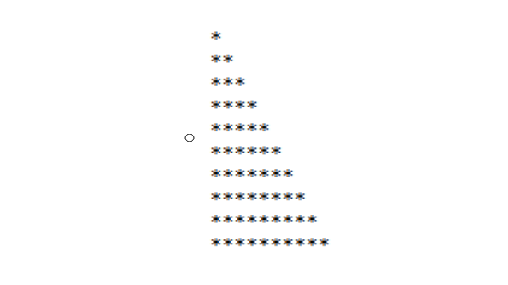

Punto 1 : Realizar la siguiente figura por medio del ciclo Para.
 //CICLO REPETITIVO POSITIVO Proceso TALLER_CICLOS_PUNTO1 Definir fila,asterisco,n Como Entero; Escribir " ingrese un numero"; leer n; para fila←1 Hasta n Con Paso 1 Hacer Para asterisco ← 1 Hasta fila Con Paso 1 Hacer Escribir "*" sin saltar; FinPara Escribir ""; FinPara FinProcesoPunto 2 : Realizar la siguiente figura por medio del ciclo Mientras - Hacer
//CICLO REPETITIVO NEGATIVO Proceso TALLER_CICLOS_PUNTO2 Definir fila,asterisco,espacios,vacio Como Entero; Escribir " ingrese un numero"; leer espacios; para fila←1 Hasta espacios Con Paso 1 Hacer Para vacio← 1 hasta espacios Con Paso 1 Hacer escribir " " Sin Saltar; FinPara espacios←espacios-1; para asterisco←1 Hasta fila Con Paso 1 Hacer escribir "*" Sin Saltar ; FinPara escribir " "; FinPara FinProcesoPunto 3 : Realizar la siguiente figura por medio del ciclo Repetir - Hasta Que
Proceso TALLER_CICLOS_PUNTO3 Definir fila,espacios,vacio, n Como Entero; Escribir "Escribir un número"; leer n; Para fila ← n hasta 1 Con Paso -1 Hacer Para espacios ← 1 hasta fila con paso 1 Hacer Escribir " " Sin Saltar; FinPara para vacio ← fila hasta n con paso 1 Hacer Escribir "* " Sin Saltar; FinPara Escribir ""; FinPara //################################################ definir contador como entero; contador ← 1; Para fila ← (n/2)+1 hasta 2 Con Paso -1 Hacer si contador=1 o contador=2 Entonces //Escribir redon(n/2); para espacios ← 1 hasta n-2 Con Paso 1 Hacer escribir " " sin saltar; FinPara para vacio ← fila hasta (n/2)+1 con paso 2 Hacer Escribir "* * *" Sin Saltar; FinPara Escribir ""; FinSi contador ← contador+1; FinPara //################################################# definir contadordos como entero; contadordos ← 1; Para fila ← n hasta 1 Con Paso -1 Hacer si contadordos=1 o contadordos=2 Entonces //Escribir redon(n/2); para espacios ← 1 hasta fila-4 Con Paso 1 Hacer escribir " " sin saltar; FinPara para vacio ← fila hasta n+4 con paso 1 Hacer Escribir "* " Sin Saltar; FinPara Escribir ""; FinSi contadordos ← contadordos+1; FinPara FinProcesoPunto 4 : Se requiere un programa que pueda crear la tabla de multiplicar del número que el usuario indique por medio del ciclo Para; esta debe ser impresa del 1 al 10. Ejemplo, si el usuario indica que desea crear la tabla del 5, entonces el resultado debería ser el siguiente:
Proceso TALLER_CICLOS_PUNTO4 Definir numeroEntrada,i Como Entero; Escribir "Digite el número para crear la tabla de multiplicar : "; Leer numeroEntrada; para i←0 hasta 10 con paso 1 Hacer Escribir numeroEntrada, " x ", i, " = ",(numeroEntrada*i); FinPara FinProcesoPunto 5 : Utilizando el ciclo que usted desee, crear un menú de ejecución infinita hasta que el usuario desee terminar dicho ciclo.
Proceso TALLER_CONDICIONALES_PUNTO5 Definir nombrem Como Caracter; Definir nombre Como Caracter; Definir saludar Como Caracter; Definir salir Como Logico; Definir opcion Como Entero; Repetir Escribir "Menú de Usuario"; Escribir "1. Capturar nombre : "; Escribir "2. Saludar persona : "; Escribir "3. Salir del sistema : "; Leer opcion; Segun opcion Hacer 1: Escribir "Digite el Nombre : "; Leer nombre; 2: Escribir "Hola! ", nombre; 3: Escribir "Salir"; De Otro Modo: Escribir "La opción elegida no existe"; FinSegun Hasta Que opcion = 3 FinProcesoPunto 6 : Se está creando una aplicación que va a estar conectada con un prototipo que permita almacenar contactos telefónicos en el dispositivo. Para ello cada contacto debe contener nombre completo, teléfono y organización. Se requiere que la aplicación permita añadir 3 contactos verificando que el número no esté almacenado, buscar contactos almacenados y eliminar contactos si el usuario lo requiere. Recuerde que el sistema debe terminar cuando el usuario así lo indique.
//AGENDA TELEFÓNICA Proceso AGENDA_TELEFONICA Definir listaOrganizacion Como Caracter; Definir listaNombre Como Caracter; Definir listaTelefono Como Caracter; Definir opcion Como Entero; Definir i,j,contador,k,espacio,val,post Como Entero; definir respuesta,respuesta2 Como Logico; Definir num Como Caracter; Dimension listaNombre[3]; Dimension listaTelefono[3]; Dimension listaOrganizacion[3]; j← 0; opcion ← 0; i ← 0; contador← 0; k←0; val←0; post←0; respuesta2← falso; respuesta ← falso; inicializar[listaNombre,listaTelefono,listaOrganizacion]; Repetir Escribir "AGENDA TELÉFONICA"; Escribir ""; Escribir "Elija la Opción: "; Escribir ""; Escribir "1. Crear Contacto: "; Escribir "2. Buscar Contacto: "; Escribir "3. Eliminar Contacto: "; Escribir "4. Salir: "; leer opcion; Segun opcion hacer 1: Escribir "Espacio Agenda : ", 3-i; Si i=0 o i=1 o i=2 Entonces Para j ← 0 Hasta 2 Con Paso 1 Hacer si listaTelefono[j] = "0" Entonces contador ← contador+1; k ← j; j ← 3; Escribir "Contactos = ",k ," Capacidad Agenda = ",j; //escribir "valor i inicio ",i; FinSi FinPara //########################################################################### contador ← i; val←0; //vall<-0; si i≤2 Entonces espacio←i; i←k; Escribir "Posición = ",i+1; Escribir ""; Escribir "Nombre Completo : "; leer listaNombre[i]; Escribir "Organización: "; Leer listaOrganizacion[i]; Mientras val = 0 Hacer //vall<-0; Escribir "Numero de Contacto: "; Leer num; si Longitud[num]=10 Entonces respuesta ← contactoNuevo[listaNombre,listaTelefono,listaOrganizacion,i,j,num,contador,respuesta,respuesta2]; si respuesta = verdadero Entonces Escribir "Teléfono ya existente"; //i<-i-1; //Escribir "val",i; val ← 1; SiNo listaTelefono[i]←num; Escribir "Telefono nuevo"; //Escribir "val",i; i←i+1; val← 1; FinSi SiNo Escribir "Número No Válido. El Número debe ser de 10 digitos "; val ← 0; contador ← 0; FinSi //i<-i-1; FinMientras FinSi FinSi Escribir i; Escribir "Espacio Agenda = ", 3- i; 2: Escribir "Espacio Agenda = ",3-i; buscarContacto[listaNombre,listaTelefono,listaOrganizacion,i,j]; 3: j ← 0; Escribir "Número de Contactos en Agenda : ", i; Si i=1 o i=2 o i=3 Entonces Escribir "Digite el Número Contacto a Eliminar :"; Leer num; //Escribir "Espacio Agenda : ", i; //si i<>0 Entonces Para j ← 0 Hasta 2 Hacer si[listaTelefono[j]=num] Entonces Escribir "Contacto con número ",listaTelefono[j], " eliminado."; listaNombre[j]←"0"; listaTelefono[j]←"0"; listaOrganizacion[j]←"0"; si i=1 o i=2 o i=3 Entonces para j←post hasta i-1 Hacer listaNombre(j)← listaNombre(j+1); listaTelefono(j)← listaTelefono(j+1); listaOrganizacion(j)← listaOrganizacion(j+1); FinPara i←i-1; FinSi SiNo Escribir "Numero no encontrado en posición: ",j; FinSi FinPara SiNo Escribir "No hay contactos en la agenda"; FinSi 4: Escribir "Salir de la Agenda"; De Otro Modo: Escribir "La opción elegida no existe"; FinSegun Hasta Que opcion = 4; FinProceso //################################################################################ SubProceso inicializar[listaNombre,listaTelefono,listaOrganizacion] Definir inic Como Entero; Para inic←0 Hasta 2 Con Paso 1 Hacer listaNombre[inic]←"0"; listaTelefono[inic]←"0"; listaOrganizacion[inic]←"0"; FinPara FinSubProceso //############################################################################### //############################################################################# SubProceso buscarContacto[listaNombre,listaTelefono,listaOrganizacion,i,j] //Definir j Como Entero; //j <- 0; Para j ← 0 Hasta 2 Con Paso 1 Hacer si listaTelefono[j] ≠ "0" Entonces Escribir listaNombre[j]; Escribir listaTelefono[j]; Escribir listaOrganizacion[j]; siNo Escribir "No hay Contactos en la Agenda en la posición: ",j; FinSi FinPara FinSubProceso //########################################################################## //############################################################################# SubProceso respuesta← contactoNuevo[listaNombre,listaTelefono,listaOrganizacion,i,j,num,contador,respuesta,respuesta2] respuesta ← falso; Para j ← 0 Hasta 2 Con Paso 1 Hacer si[listaTelefono[j]=num] Entonces respuesta ← verdadero; FinSi FinPara FinSubProcesoPunto 7 : El parqueadero "El guardián" presta sus servicios de parqueadero nocturno para los usuarios del barrio y requiere una aplicación que permita registrar los vehículos que se cuidan en estas instalaciones. Se sugiere que el parqueadero tenga los atributos del vehículo como son, placa y marca, y los datos del cliente como son nombre completo y número de teléfono. Para cada vehículo se debe permitir la opción de ingresar al parqueadero, retirar del parqueadero y consultar si un vehículo se encuentra en el parqueadero. Recuerde que el sistema debe terminar cuando el usuario así lo indique. Tenga en presente que el parqueadero solo puede almacenar máximo 5 vehículos.
//PARQUEADERO ELGUARDIAN------->SERVICIO NOCTURNO //######################################################################## Proceso PARQUEADERO Definir listaNombre Como Caracter; Definir listaTelefono Como Caracter; Definir listaMarca Como Caracter;; Definir listaPlaca Como Caracter; Definir opcion Como Entero; Definir i,j,contador,k,espacio,val,post Como Entero; definir respuesta Como Logico; Definir placa Como Caracter; Dimension listaPlaca[5]; Dimension listaMarca[5]; Dimension listaNombre[5]; Dimension listaTelefono[5]; j← 0; opcion ← 0; i ← 0; contador← 0; k←0; val←0; post←0; respuesta ← falso; inicializar[listaNombre,listaTelefono,listaMarca,listaPlaca]; Repetir Escribir "*************************************************"; Escribir ""; Escribir "SERVICIO PARQUEADERO NOCTURNO"; Escribir ""; Escribir "Elija la Opción: "; Escribir ""; Escribir "1. Ingresar Vehículo: "; Escribir "2. Retirar Vehículo: "; Escribir "3. Consultar Vehículo: "; Escribir "4. Salir: "; leer opcion; Segun opcion hacer 1: Escribir "Espacio Parqueadero : ", 5-i; Si i=0 o i=1 o i=2 o i=3 o i=4 Entonces Para j ← 0 Hasta 4 Con Paso 1 Hacer si listaPlaca[j] = "0" Entonces contador ← contador+1; k ← j; j ← 5; Escribir "Vehículos en parqueadero = ",k ," Capacidad Parqueadero = ",j; FinSi FinPara //########################################################################### contador ← i; val←0; si i≤4 Entonces espacio←i; i←k; Escribir "Posición parqueadero = ",i+1; Escribir ""; Escribir "Nombre Completo : "; leer listaNombre[i]; Escribir "Teléfono: "; Leer listaTelefono[i]; Escribir "Marca Vehículo: "; Leer listaMarca[i]; Mientras val = 0 Hacer Escribir "Placa Vehículo: "; Leer placa; si Longitud[placa]=6 Entonces respuesta ← placaNueva[listaNombre,listaTelefono,listaMarca,listaPlaca,i,j,placa,contador,respuesta]; si respuesta = verdadero Entonces Escribir "Placa Vehículo existente en el parqueadero"; val ← 1; SiNo listaPlaca[i]←placa; i←i+1; val← 1; FinSi SiNo Escribir "Placa No Válida. Verifique los dígitos y debe ser de 6 digitos "; val ← 0; contador ← 0; FinSi FinMientras FinSi FinSi Escribir i; Escribir "Espacio Parqueadero = ", 5- i; 2: j ← 0; Escribir "Número de vehículos en el parqueadero : ", i; Si i=0 o i=1 o i=2 o i=3 o i=4 Entonces Escribir "Digite el Número Placa a Eliminar :"; Leer placa; Para j ← 0 Hasta 4 Hacer si[listaPlaca[j]=placa] Entonces Escribir "Vehículo con número número de placa ",listaPlaca[j], " eliminado."; listaNombre[j]←"0"; listaTelefono[j]←"0"; listaMarca[j]←"0"; listaPlaca[j]←"0"; si i=0 o i=1 o i=2 o i=3 o i=4 Entonces para j←post hasta i-1 Hacer listaNombre(j)← listaNombre(j+1); listaTelefono(j)← listaTelefono(j+1); listamarca(j)← listaMarca(j+1); listaPlaca(j)← listaPlaca(j+1); FinPara //j<-j+1; i←i-1; FinSi SiNo Escribir "Numero placa no encontrada en la posición: ",j; FinSi FinPara SiNo Escribir "No hay vehículos en el parqueadero"; FinSi 3: Escribir "Espacio Parqueadero = ",5-i; consultarPlaca[listaNombre,listaTelefono,listaMarca,listaPlaca,i,j]; 4: Escribir "Salir control Parqueadero"; De Otro Modo: Escribir "La opción elegida no existe"; FinSegun Hasta Que opcion = 4; FinProceso //################################################################################ SubProceso inicializar[listaNombre,listaTelefono,listaMarca,listaPlaca] Definir inic Como Entero; Para inic←0 Hasta 4 Con Paso 1 Hacer listaNombre[inic]←"0"; listaTelefono[inic]←"0"; listaMarca[inic]←"0"; listaPlaca[inic]←"0"; FinPara FinSubProceso //############################################################################### //############################################################################# SubProceso consultarPlaca[listaNombre,listaTelefono,listaMarca,listaPlaca,i,j] Para j ← 0 Hasta 4 Con Paso 1 Hacer si listaPlaca[j] ≠ "0" Entonces Escribir listaNombre[j]; Escribir listaTelefono[j]; Escribir listaMarca[j]; Escribir listaPlaca[j]; siNo Escribir "No hay Vehículos en el parqueadero en la posición :",j; FinSi FinPara FinSubProceso //########################################################################## //############################################################################# SubProceso respuesta← placaNueva[listaNombre,listaTelefono,listaMarca,listaPlaca,i,j,placa,contador,respuesta] respuesta ← falso; Para j ← 0 Hasta 4 Con Paso 1 Hacer si[listaPlaca[j]=placa] Entonces respuesta ← verdadero; FinSi FinPara FinSubProcesoPunto 8 : La escuela automovilística "El Maestro" requiere una aplicación que permita registrar a sus clientes en los cursos de enseñanza automovilística y establecer quienes lo han aprobado para continuar con el trámite de adquirir la licencia de conducción. Para cada usuario se debe permitir registrar su ingreso al curso, consultar usuarios que hayan presentado el curso y resultados de la prueba del curso (si fueron aprobados o no). Recuerde que el sistema debe terminar cuando el usuario así lo indique. Tenga presente que la escuela tiene capacidad máxima de gestionar 8 usuarios en su totalidad.
//ESCUELA AUTOMOVILÍSTICA "EL MAESTRO" //######################################################################## Proceso ESCUELA_AUTOMOVILISTICA Definir listaNombre Como Caracter; Definir listaCedula Como Caracter; Definir listaTelefono Como Caracter; Definir listaResultado Como Caracter; definir noAprobado, Aprobado, cedula Como Caracter; definir suma Como Entero; Definir opcion Como Entero; Definir i,j,contador,k,espacio,val,val2, post Como Entero; definir respuesta,resulPrueba,resultadoSuma Como Logico; //Definir resulPrueba Como Logico; Dimension listaNombre[8]; Dimension listaCedula[8]; Dimension listaTelefono[8]; Dimension listaResultado[8]; j← 0; opcion ← 0; i ← 0; contador← 0; k←0; val←0; val2←0; post←0; noAprobado←""; respuesta ← falso; resulPrueba ← Falso; resultadoSuma ← Falso; inicializar[listaNombre,listaCedula,listaTelefono,listaResultado]; Repetir Escribir "*************************************************"; Escribir ""; Escribir "ESCUELA AUTOMOVILÍSTICA"; Escribir ""; Escribir "Elija la Opción: "; Escribir ""; Escribir "1. Registrar Usuario Ingreso al Curso: "; Escribir "2. Consultar Usuarios en el Curso: "; Escribir "3. Presentar Prueba: "; Escribir "4. Consultar Resultado de Usuario: "; Escribir "5. Eliminar Usuario: "; Escribir "6. Salir: "; leer opcion; Segun opcion hacer 1: Escribir "*************************************************"; Escribir "Registrar Usuario Ingreso al Curso : ", 8-i; Si i=0 o i=1 o i=2 o i=3 o i=4 o i=5 o i= 6 o i= 7 Entonces Para j ← 0 Hasta 7 Con Paso 1 Hacer si listaCedula[j] = "0" Entonces contador ← contador+1; k ← j; j ← 8; Escribir "Usuarios en Curso = ",k ," Capacidad del Curso = ",j; FinSi FinPara //########################################################################### contador ← i; val←0; si i≤7 Entonces espacio←i; i←k; Escribir "Posición en el Curso = ",i+1; Escribir ""; Escribir "Nombre Completo Usuario : "; leer listaNombre[i]; Escribir "Teléfono Usuario: "; Leer listaTelefono[i]; //Escribir "Curso Aprobado: ",noAprobado; //Leer listaResultado[i]; listaResultado(i)←"No Aprobado"; Mientras val = 0 Hacer Escribir "Cédula Usuario: "; Leer cedula; si Longitud(cedula)=3 Entonces respuesta ← cedulaNueva(listaNombre,listaTelefono,listaResultado,listaCedula,i,j,cedula,contador,respuesta); si respuesta = verdadero Entonces Escribir "Usuario con Número de Cédula ", cedula, " ya está inscrito en el Curso. "; val ← 1; SiNo listaCedula[i]←cedula; i←i+1; val← 1; FinSi SiNo Escribir "Cédula No Válida. Verifique los dígitos. "; val ← 0; contador ← 0; FinSi FinMientras FinSi FinSi Escribir i; Escribir "Espacio en el Curso = ", 8- i; 2: Escribir "*************************************************"; Escribir "Consultar Usuarios en el Curso : "; Escribir "Disponibilidad de espacio en el curso = ",8-i; consultarCedula[listaNombre,listaTelefono,listaResultado,listaCedula,i,j]; 3: Escribir "*************************************************"; Escribir "Presentar Prueba"; val2←0; j ← 0; Escribir "Usuarios en el curso : ", i; Si i=0 o i=1 o i=2 o i=3 o i=4 o i=5 o i=6 o i=7 Entonces //Mientras val2 = 0 Hacer Escribir "Digite el Número de Cédula del Usuario a Realizar la Prueba :"; Leer cedula; Para j ← 0 Hasta 7 Hacer si(listaCedula(j)=cedula) Entonces resultadoSuma← prueba(listaNombre,listaTelefono,listaResultado,listaCedula,i,j,cedula,contador,resultadoSuma); si resultadoSuma = Verdadero Entonces Escribir "Curso Aprobado por el Usuario identificado con cédula número ", cedula; listaNombre(j)←listaNombre(j); listaTelefono(j)←listaTelefono(j); listaResultado(j)←"Aprobado"; listaCedula(j)←listaCedula(j); // val2 <- 1; FinSi SiNo respuesta ← cedulaNueva(listaNombre,listaTelefono,listaResultado,listaCedula,i,j,cedula,contador,respuesta); si respuesta = Falso Entonces Escribir "Usuario con Número de Cédula ", cedula, " no está inscrito en el Curso. "; // Escribir "Cédula No Válida. Verifique los dígitos. "; // val2 <- 1; //contador <- 0; FinSi FinSi FinPara //FinMientras FinSi //respuesta <- cedulaNueva[listaNombre,listaTelefono,listaResultado,listaCedula,i,j,cedula,contador,respuesta]; // si respuesta = Verdadero Entonces // Escribir "Usuario con Número de Cédula ", cedula, " presentar la siguiente Prueba. "; // // resultadoSuma<- prueba(listaNombre,listaTelefono,listaResultado,listaCedula,i,j,cedula,contador,resultadoSuma); // si resultadoSuma = Verdadero Entonces // Escribir "Curso Aprobado por el Usuario identificado con cédula número ", cedula; // listaNombre(j)<-listaNombre(j); // listaTelefono(j)<-listaTelefono(j); // listaResultado(j)<-"Aprobado"; // listaCedula(j)<-listaCedula(j); // // val2 <- 1; // // FinSi //resulPrueba <- cedulaPrueba(listaNombre,listaTelefono,listaResultado,listaCedula,i,j,cedula,contador,respuesta, resulPrueba); // si resulPrueba = verdadero Entonces // Escribir "Usuario con Número de Cédula ", cedula, " presentar la siguiente Prueba. "; // // resultadoSuma<- prueba(resultadoSuma); // si resultadoSuma = Verdadero Entonces // Escribir "Curso Aprobado por el Usuario identificado con cédula número ", cedula; // listaResultado(j)<-"Aprobado"; // val2 <- 1; // // FinSi 4: Escribir "*************************************************"; Escribir "Consultar Resultados de Usuario : "; j ← 0; Escribir "Usuarios en el curso : ", i; Si i=0 o i=1 o i=2 o i=3 o i=4 o i=5 o i=6 o i=7 Entonces Escribir "Digite el Número de Cédula del Usuario a Consultar :"; Leer cedula; Para j ← 0 Hasta 7 Hacer si(listaCedula(j)=cedula) Entonces Escribir "Usuario con Número de Cédula ", listaCedula(j), " Curso ", listaResultado(j); SiNo Escribir "Numero de cédula no encontrada en la posición: ",j; FinSi FinPara SiNo Escribir "No hay Usuarios Inscritos en el Curso Automovilístico"; FinSi 5: Escribir "*************************************************"; Escribir "Eliminar Usuario del Curso : "; j ← 0; Escribir "Usuarios en el curso : ", i; Si i=0 o i=1 o i=2 o i=3 o i=4 o i=5 o i=6 o i=7 Entonces Escribir "Digite el Número de Cédula del Usuario a Eliminar :"; Leer cedula; Para j ← 0 Hasta 7 Hacer si(listaCedula(j)=cedula) Entonces Escribir "Usuario con número de cédula ",listaCedula(j), " eliminado."; listaNombre(j)←"0"; listaTelefono(j)←"0"; listaResultado(j)←"0"; listaCedula(j)←"0"; si i=0 o i=1 o i=2 o i=3 o i=4 o i=5 o i=6 o i=7 Entonces para j←post hasta i-1 Hacer listaNombre(j)← listaNombre(j+1); listaTelefono(j)← listaTelefono(j+1); listaResultado(j)← listaResultado(j+1); listaCedula(j)← listaCedula(j+1); FinPara //j<-j+1; i←i-1; FinSi SiNo Escribir "Numero de cédula no encontrada en la posición: ",j; FinSi FinPara SiNo Escribir "No hay Usuarios Inscritos en el Curso Automovilístico"; FinSi 6: Escribir "*************************************************"; Escribir "Salir control Curso"; De Otro Modo: Escribir "La opción elegida no existe"; FinSegun Hasta Que opcion = 6; FinProceso //################################################################################ SubProceso inicializar(listaNombre,listaTelefono,listaResultado,listaCedula) Definir inic Como Entero; Para inic←0 Hasta 7 Con Paso 1 Hacer listaNombre(inic)←"0"; listaTelefono(inic)←"0"; listaResultado(inic)←"0"; listaCedula(inic)←"0"; FinPara FinSubProceso //############################################################################### //############################################################################# SubProceso consultarCedula(listaNombre,listaTelefono,listaResultado,listaCedula,i,j) Para j ← 0 Hasta 7 Con Paso 1 Hacer si listaCedula(j) ≠ "0" Entonces Escribir "Usario: ", listaNombre(j); Escribir "Teléfono: ", listaTelefono(j); Escribir "Resultado Curso: ", listaResultado(j); Escribir "Cédula: ", listaCedula(j); siNo Escribir "No hay Usuarios en el curso en la posición :",j; FinSi FinPara FinSubProceso //########################################################################## //############################################################################# SubProceso respuesta← cedulaNueva[listaNombre,listaTelefono,listaResultado,listaCedula,i,j,cedula,contador,respuesta] respuesta ← falso; Para j ← 0 Hasta 7 Con Paso 1 Hacer si[listaCedula[j]=cedula] Entonces respuesta ← verdadero; FinSi FinPara FinSubProceso //############################################################################################################################## SubProceso resultadoSuma ← prueba ( listaNombre,listaTelefono,listaResultado,listaCedula,i,j,cedula,contador,resultadoSuma ) Definir suma Como Entero; resultadoSuma ← Falso; Escribir "Digite el RESULTADO de la SUMA de 10 + 10; "; leer suma; si suma = 20 Entonces resultadoSuma← Verdadero; SiNo Escribir "Prueba No Aprobada"; FinSi FinSubProceso //############################################################################### SubProceso resulPrueba ← cedulaPrueba ( listaNombre,listaTelefono,listaResultado,listaCedula,i,j,cedula,contador,respuesta,resulPrueba ) resulPrueba ← falso; Para j ← 0 Hasta 7 Con Paso 1 Hacer si(listaCedula(j)=cedula) Entonces resulPrueba ← verdadero; FinSi FinPara FinSubProceso